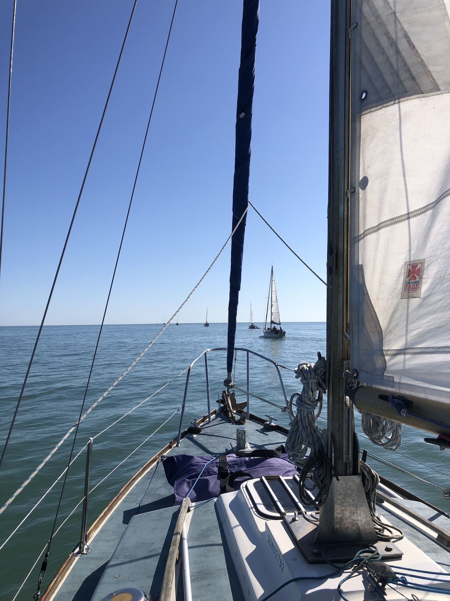
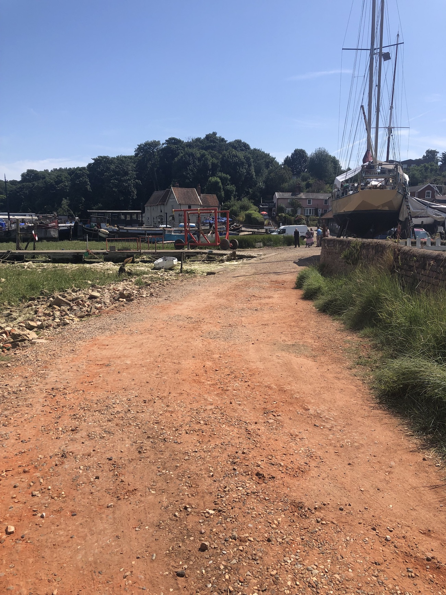
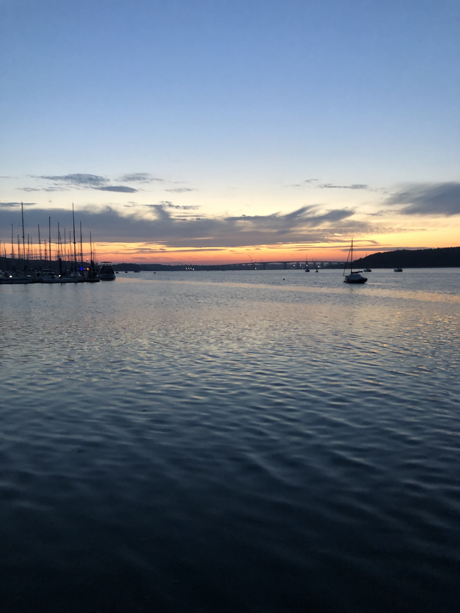
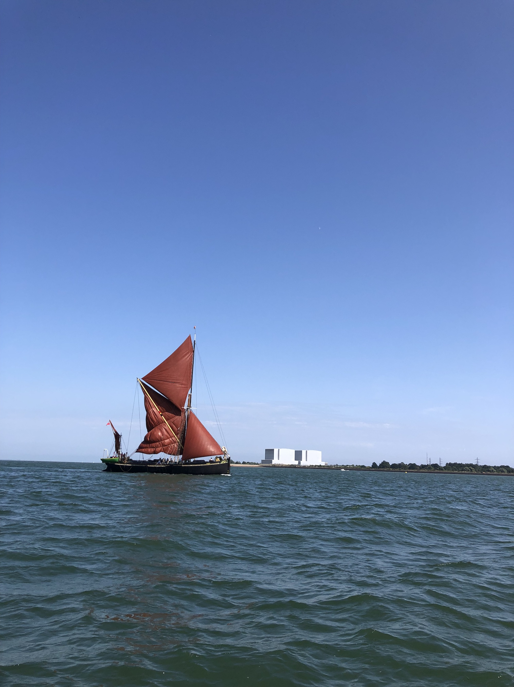
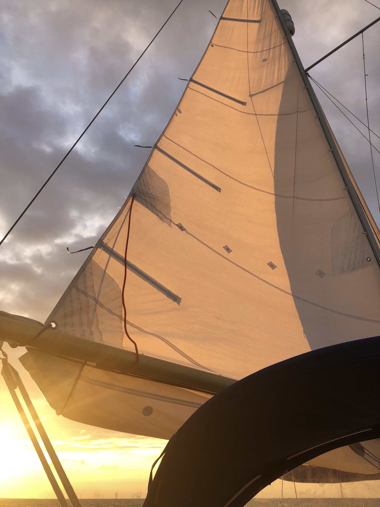

Sailing the East Coast Cruise with Greenwich Yacht Club July - August 2024
Day 1: Saturday 27.4.24 Gillingham to Queenborough
Wind 5kn Easterly 3hrs
Half motoring half sailing in 5kn of easterly wind and pushing into the rising tide. This was a leisurely cruise down to Queenborough in 3 hours. Pleasant enough and good for my new crew for the week comprising Ian and his 16 year old grandson Sebi. Rafted with Jeannie, Lena and Courage 1 at Queenborough on a grey buoy. A good start.
Day 2: Sunday 28.4.24 Queenborough to Brightlingsea
Wind 5kn Easterly 7.5hrs
Early start. Off the mooring at 0650 and out into an already warm day. There was no wind so motoring was necessary for the first 5 hours - hot and noisy but you get there. The rev counter seemed erratic but the engine sounded alright. Is it my hearing aids or is the engine noise louder than it used to be? I suspect its time to replace the engine mounts. We slipped across the shipping lane and turned right at South Shoebury and on up the Essex coast with not a cloud in the sky. It wasn't until we crossed the Spitway at low water (never less than 2.2m depth under the keel) that the wind came up and we could sail. This provided us with a lovely light wind run part goosewinging, part broad reaching, having to concentrate to keep the genoa flying. We crept up on and eventually passed Lena and Ardent. A satisfying sail into Brightlingsea teaching my young crew to use a light touch on the tiller - he's a fast learner. A warm atmosphere on the visitors' pontoon in the evening over drinks. Interestingly a large flock of little egrets flew over, surprising to see so many together. Also surprising - our water taxi driver sent us and about 6 other passengers crashing into the side of a fast moving yacht with a great thump. The yacht's people were not happy and nor were we. The taxi driver seemed to ignore the whole event. Surprising because the Brightlingsea harbour team are so efficient in all other respects.

Day 3: Monday 29.4.24 Brightlingsea to Royal Harwich Yacht Club, Pin Mill
Wind 5-10kn Easterly 8hrs
Hot. A very good light wind beat up the Wallet, practicing keeping the tell tales flying in the gentle wind is very sensitive but makes a real difference to speed. The passage took a bit longer than planned so the turn of the tide caught us just before Naze Head so motor sailed for a bit to assist us. Once round into Harwich Bay we had a lovely beam reach turning to a broad reach into Harwich Harbour where even big boats like Ardent look tiny against some of the largest container ships in the world. Snow Goose goosewinged gently up the Orwell to RHYC, where Ian the berthing master was welcoming as always. No wildlife seen on this trip yet apart from flocks of unknown small waders flying past in the Orwell. We hope to see a seal in the marina and maybe swallows.
Day 4 Tuesday 30.7.24 Rest Day - Royal Harwich Yacht Club
Lots of wildlife! Rabbits among the dinghies in the club yard. Wagtails strut about the lawns looking earnest. House martins cruise at high speed around the buildings. A Kingfisher flashes by close to the water. Herons pass sedately in pairs. Swallows do astonishing flying acrobatics through the rigging of the boats on the pontoons talking all the time. What a show!
It cooled down as the evening came on - the breeze on the water helps. Passing time here is very easy. I used to find these so called rest days difficult but now I'm ok with them (occasionally). The engine gear change had been a bit tricky in the last few days, not always engaging straight away in forward gear. I've shifted the cable fixing a little and it appears to be now solved - I hope. Aiming to set off tomorrow at 1200 or a little before.


Day 5 Wednesday 31.7.24 Royal Harwich Yacht Club to Bradwell
Wind 5-15kn Northeasterly 6.5hrs
Waiting for the off while my crew went swimming in the nearby (by road) Stour. I was happier preparing the boat and giving it a clean up. There are few bumps on my new paintwork already! All will be easily touched up at the end of the season. We set off just before midday for a rolling downwind sail down the Wallet. Before that it was a motor sail down to Harwich and a great beam reach across the bay to Naze Head. Once round the headland we settled in for a series of long broad reaches gybing at each turn - the gybes never felt difficult to manage. Belting down the Wallet at 5-6 kn and more, surfing waves and getting into the rhythm of adjusting the steering over each wave, these as much as 1.5-1.8m high at times. We came into the Blackwater and arrived at Bradwell at 1800, tired but happy after an exciting day's sail. Too tired to go to the pub so its supper in the marina and a glass of wine on board before bed.
Day 6 Thursday 1.8.24 Bradwell to West Mersey via Stone
Wind 10-15kn Northeasterly 4.5hrs
Its hot again. The crew swam on the long yellow floating line behind the boat in the tide at Marconi Point - good excercise for them trying to keep pace with the tide. I stayed on board in case rescue was needed. Bradwell marina was a bit unfriendly this time; they were cross with GYC for being disorganised, although more likely because of the lack of custom resulting from the shrinkage of our fleet. That was a pity as Bradwell is a nice stop over and easier to get into after a tiring day than it looks. We set off at 1030 up the Blackwater to Osea after refuelling at Bradwell, we've only used 15 litres in I think about 15 hours motoring. A litre per hour? Unlikely. (I plan for 1.5 litres per hour or more in demanding conditions).
We thought this sultry weather might bring thunder storms but it didn’t. As we sail down the Blackwater the wind built to 20kn and we had an unexpectedly lively beat in the sunshine.

West Mersey: They say that time slows down in an accident - It does. A large red fishing boat came past our mooring at west Mersey at speed, or rather it didn't pass. It was too close, caughts our (brand new) WMSC visitor mooring buoy which disappeared underneath it and snow goose was propelled at speed downwards and forwards hitting the fishing boat with a loud crack and a groan. I yelled at the driver and he realised too late what had happened. His big heavy boat was brought to a sudden halt, swung round and went promptly aground. Snow Goose recovered her normal angle to the water and we started to untangle the mess. All this time I was on the bow, having been sorting lines, so it was very up close and immediate. The fisherman was apologetic enough but he was entirely in the wrong, too close to the shore, not travelling in the fairway, too close to our mooring - oh and doing about 8knots. As if out of nowhere his family - dad, wife and baby(!) appeared in a launch and expertly and calmly helped to extricate the mooring buoy from underneath his boat and free Snow Goose. The fisherman then applied full throttle and easily got his large boat off the mud. "Sorry mate" and he was off to calmer fishing grounds. His family told me "he'll be in touch". How I wondered. Snow Goose sustained a severely bent bow roller, a bent anchor (which takes a bit of doing) and a slightly misshapen pushpit. The anchor was stuck firm by a mangled drop nose holding pin. Half an hour of hammering got it free which meant we could carry on with the cruise - I would have been cautious sailing in the Thames Estuary without access to the anchor. An interesting evening... I noticed afterwards that I was a little bashed and bruised although I don't remember falling, but the main thing I do remember was the slow motion, taking in the situation as it developed and wondering how much worse it might get. It didn't get worse so it doesn’t matter. Onwards and upwards!
Day 7 Friday 2.8.24 West Mersey to Brightlingsea
Wind 5-15kn Easterly 2hrs
A fine morning and we pottered ashore in the WM sailing club launch and a walked along the coast road to do some shopping and get a coffee. West Mersey has a pleasant low key scale and the architecturally better buildings are all 1920s - there must have been an influx of wealthy, watery people then. There is a quiet church in shady church yard on the High Street. All seemed good.
Back on board and heading for Brightlingsea today. Most of the fleet had gone back across the Thames Estuary today - a hot and slow for crossing for them. We would do it the next day in the forecasted stronger winds as planned.
A wonderful upwind beat from WM to Brightlingsea - going down tide in a 12kn easterly taking only two hours, mostly on one tack. The boat was pretty much sailing herself with only an occasional tweak on the tiller. It's great when the sails are balanced and there is little or no weather helm. The beat unfolded into a goosewing run as we went up the Colne to Brightlingsea. There was a gaffer well aground on the north side of the channel as we went in and it was going to be there for some hours! A lesson in where the safe channel is - well to the south. A pleasantly quiet afternoon in Brightlingsea.
Day 8 Saturday 2.8.24 Brightlingsea to Gillingham
Wind 15-20kn Southwesterly 8.5hrs

4.30 start! Got off the pontoon in the dark moving gently into the tide without difficulty, and then out of the channel, staying on the south side where it’s deep. One good thing about doing it in the dark is the transit markers on the shore are lights so are very clear and helpful. So many people go aground in this channel I can only assume I will one day... We started sailing as soon as we were out into the river and on our way to the Spitway in the growing dawn; a beam reach changing to a beat as we rounded the Spitway and sailed on towards the Whittaker Beacon. A good thing we were well reefed. It became a bit of a Nantucket Sleigh ride sail, fast and wet in the steep wind over tide chop. By the time we were round the Whittaker and headed SW the wind was on the nose and we accepted motor sailing from here on. This was done in a series of long shallow tacks to keep the waves on the diagonal and avoid slamming. It was half exhilarating progress and half endurance test. We came through the Swin channel bottleneck with a fine Thames barge impressively tacking in full sail from side to side of the channel. I don’t think they could have been pulling on any winches! We kept going right the way into the Medway and on up to Gillingham. It has been tiring but satisfying to go so far in these wind head on and steep tidal chop conditions. If Snow Goose were twice the length she might deal with this chop more easily. I'm not complaining though - the boat behaved impeccably all week and my crew seemed happy with the cruise.
So tired I decided to stay on board overnight in the marina. Very peaceful.